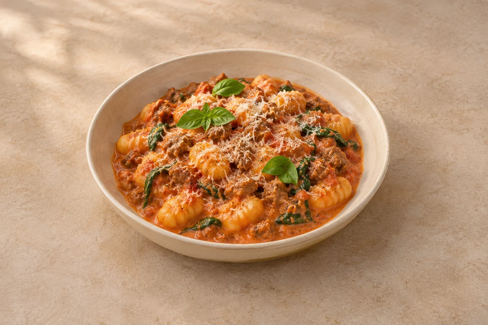

Pastina
Italian-inspiredPasta·About 20 min total·Serves 2
Pasta
Pillowy gnocchi with browned pork sausage, creamy tomato sauce, spinach, Parmesan and basil.
Estimated total: About 30 min totalCook the gnocchi while the sauce simmers.
Ingredient quantities update automatically

If the sauce becomes too thick, loosen it with a splash of reserved gnocchi cooking water before serving.
Cool promptly, refrigerate covered within 2 hours and eat within 48 hours.
For best texture, freeze the sausage and tomato sauce before adding cream, spinach and gnocchi. Defrost fully in the fridge and use within 24 hours; finish with fresh cream, spinach and freshly cooked gnocchi.
Reheat once until steaming hot throughout, stirring gently with a splash of water. Add freshly cooked gnocchi when reheating sauce-only portions.
Use chicken sausages instead of pork, or kale instead of spinach, allowing longer for it to soften.
Cool cooked leftovers in small portions and refrigerate within 2 hours. Keep the fridge at 0–5°C and the freezer around −18°C. Freeze suitable leftovers promptly. Defrost fully in the fridge and use within 24 hours. Reheat only once, until steaming hot all the way through. Follow any shorter use-by or opened-pack instructions; using older cooked ingredients does not restart their storage time.
Food-safety guidance: Food Standards Agency: chilling and freezing · reheating leftovers.